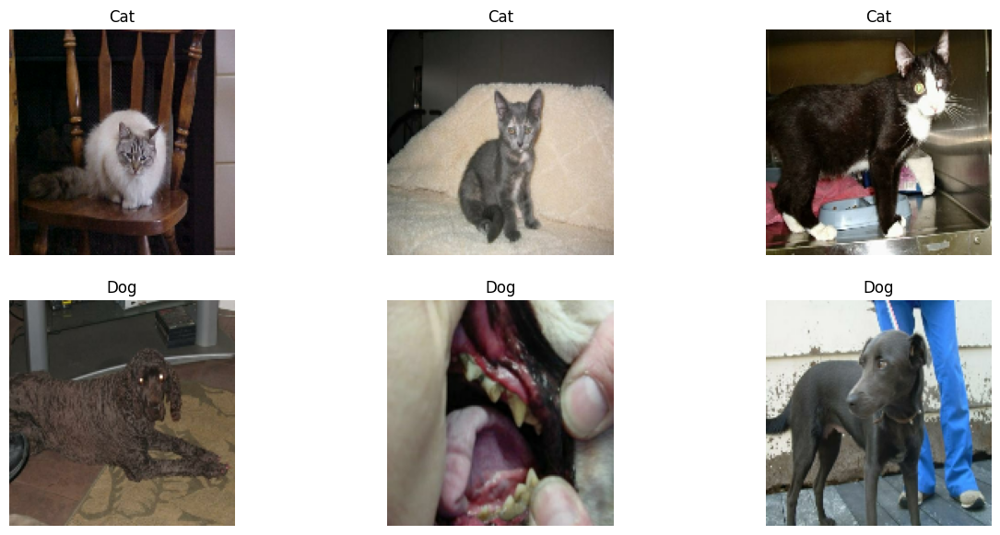
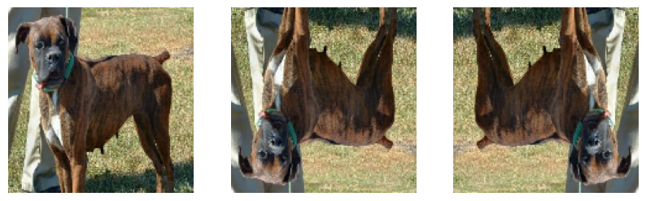
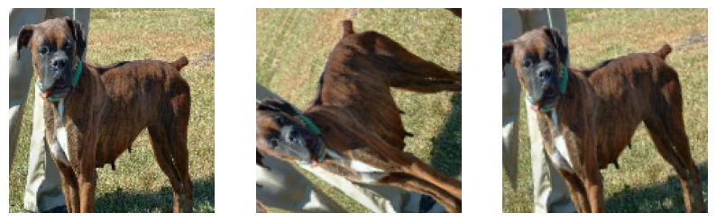

Homework 5: TensorFlow and Keras Modeling (Image Classification)
week 8
Homework
Author
Thomas Nguyen
Published
March 3, 2024
In this blog post, we will go over how keras layering and tensorflow to create different models for a dataset. For our example, we will be using image classification to determine the specific type of animal the image portrays: cat or dog.
Loading Packages
To start, we need to import and load all our needed packages.
First, because we will be utilizing Keras 3 in order to work on top of our TensorFlow backend, we need to upgrade the Colab’s default version of 2.15.0 to get version 3.0.5
!pip install keras --upgrade
Requirement already satisfied: keras in /usr/local/lib/python3.10/dist-packages (2.15.0)
Collecting keras
Downloading keras-3.0.5-py3-none-any.whl (1.0 MB)
━━━━━━━━━━━━━━━━━━━━━━━━━━━━━━━━━━━━━━━━ 1.0/1.0 MB 8.8 MB/s eta 0:00:00
Requirement already satisfied: absl-py in /usr/local/lib/python3.10/dist-packages (from keras) (1.4.0)
Requirement already satisfied: numpy in /usr/local/lib/python3.10/dist-packages (from keras) (1.25.2)
Requirement already satisfied: rich in /usr/local/lib/python3.10/dist-packages (from keras) (13.7.1)
Collecting namex (from keras)
Downloading namex-0.0.7-py3-none-any.whl (5.8 kB)
Requirement already satisfied: h5py in /usr/local/lib/python3.10/dist-packages (from keras) (3.9.0)
Requirement already satisfied: dm-tree in /usr/local/lib/python3.10/dist-packages (from keras) (0.1.8)
Requirement already satisfied: ml-dtypes in /usr/local/lib/python3.10/dist-packages (from keras) (0.2.0)
Requirement already satisfied: markdown-it-py>=2.2.0 in /usr/local/lib/python3.10/dist-packages (from rich->keras) (3.0.0)
Requirement already satisfied: pygments<3.0.0,>=2.13.0 in /usr/local/lib/python3.10/dist-packages (from rich->keras) (2.16.1)
Requirement already satisfied: mdurl~=0.1 in /usr/local/lib/python3.10/dist-packages (from markdown-it-py>=2.2.0->rich->keras) (0.1.2)
Installing collected packages: namex, keras
Attempting uninstall: keras
Found existing installation: keras 2.15.0
Uninstalling keras-2.15.0:
Successfully uninstalled keras-2.15.0
ERROR: pip's dependency resolver does not currently take into account all the packages that are installed. This behaviour is the source of the following dependency conflicts.
tensorflow 2.15.0 requires keras<2.16,>=2.15.0, but you have keras 3.0.5 which is incompatible.
Successfully installed keras-3.0.5 namex-0.0.7
With this, we can import all the packages and establish our backend:
import osos.environ["KERAS_BACKEND"] ="tensorflow"import kerasfrom keras import utils, datasets, layers, modelsimport matplotlib.pyplot as pltimport numpy as npimport jax.numpy as jnpimport tensorflow_datasets as tfdsfrom tensorflow import data as tf_dataimport tensorflow as tfimport random
Now that we imported the packages, let’s check the version of keras
keras.__version__
'3.0.5'
Next, since we are creating Keras backends and TensorFlow models, we will incorporate GPUs (or graphics processing units) to accelerate the computation.
You’ll need to enable GPUs for the notebook:
Navigate to Edit→Notebook Settings
select GPU from the Hardware Accelerator drop-down
After, we’ll confirm that we can connect the GPU with jax:
import jaxjax.devices()
[cuda(id=0)]
Let’s check our GPU usage
!nvidia-smi
Mon Mar 11 02:47:39 2024
+---------------------------------------------------------------------------------------+
| NVIDIA-SMI 535.104.05 Driver Version: 535.104.05 CUDA Version: 12.2 |
|-----------------------------------------+----------------------+----------------------+
| GPU Name Persistence-M | Bus-Id Disp.A | Volatile Uncorr. ECC |
| Fan Temp Perf Pwr:Usage/Cap | Memory-Usage | GPU-Util Compute M. |
| | | MIG M. |
|=========================================+======================+======================|
| 0 Tesla T4 Off | 00000000:00:04.0 Off | 0 |
| N/A 35C P0 25W / 70W | 105MiB / 15360MiB | 3% Default |
| | | N/A |
+-----------------------------------------+----------------------+----------------------+
+---------------------------------------------------------------------------------------+
| Processes: |
| GPU GI CI PID Type Process name GPU Memory |
| ID ID Usage |
|=======================================================================================|
+---------------------------------------------------------------------------------------+
Obtaining Data
Now that we have finished loading our packages, we can start creating our datasets using tensorflow.
Similar to when using numpy in the past, we will split our data into groups, except this time we will have three of them: train, test, and validation. The reason we have a validation dataset is because we are training multiple models that have different combinations of hyperameters. Thus, we need a common factor that will help evaluate and compare the performance of each model through the validation set.
For our code, we will split it we will do 40:10:10 (remaining unused), so our code should look something like this:
train_ds, validation_ds, test_ds = tfds.load("cats_vs_dogs",# 40% for training, 10% for validation, and 10% for test (the rest unused) split=["train[:40%]", "train[40%:50%]", "train[50%:60%]"], as_supervised=True, # Include labels)print(f"Number of training samples: {train_ds.cardinality()}")print(f"Number of validation samples: {validation_ds.cardinality()}")print(f"Number of test samples: {test_ds.cardinality()}")
Downloading and preparing dataset 786.67 MiB (download: 786.67 MiB, generated: 1.04 GiB, total: 1.81 GiB) to /root/tensorflow_datasets/cats_vs_dogs/4.0.1...
Dataset cats_vs_dogs downloaded and prepared to /root/tensorflow_datasets/cats_vs_dogs/4.0.1. Subsequent calls will reuse this data.
Number of training samples: 9305
Number of validation samples: 2326
Number of test samples: 2326
WARNING:absl:1738 images were corrupted and were skipped
Next, to ensure consistent sizing, we want to resize and establish the expected dimension of all our images. We can accomplish this by using the layers object and Resizing() function in keras as follows:
Lastly, we want to set up our data piplines for training, validation, and testing (in order to optimize efficiency of loading and preprocessing our data), which can be done as seen below:
# Defining number of samples processed in each batch for trainingbatch_size =64train_ds = train_ds.batch(batch_size).prefetch(tf_data.AUTOTUNE).cache()validation_ds = validation_ds.batch(batch_size).prefetch(tf_data.AUTOTUNE).cache()test_ds = test_ds.batch(batch_size).prefetch(tf_data.AUTOTUNE).cache()
Once our batches of data are complete, let’s see what our images look like (checking to see if they are consistent, yet still clear). We can do this by creating a function that will take in our dataset and output the desired-dimensions subplot)
def ds_visual(dataset, num_rows, num_cols, n):# Creating plot fig, axes = plt.subplots(num_rows, num_cols, figsize=(15, 7))# Selecting a single batchfor i, (images, labels) inenumerate(dataset.skip(n).take(1)):# Initializing counters for dog,cat appearances in plot cat_count =0 dog_count =0# Iterating through the batch of image,label pairingsfor image, label inzip(images, labels):# Selecting only the car imagesif label ==0and cat_count < num_cols:# Plotting cat image axes[0, cat_count].imshow(image.numpy().astype("uint8")) axes[0, cat_count].set_title('Cat') axes[0, cat_count].axis("off") cat_count +=1# Selecting only the car imageselif label ==1and dog_count < num_cols:# Plotting dog image axes[1, dog_count].imshow(image.numpy().astype("uint8")) axes[1, dog_count].set_title('Dog') axes[1, dog_count].axis("off") dog_count +=1# Stopping looop once all subplots filledif cat_count == num_cols and dog_count == num_cols:break plt.show()
With this function, we can see what our images look like.
ds_visual(train_ds, 2, 3, random.randint(1,10))

Perfect! We have exactly one row of three cats and one row of three dogs, and all of these images are of the same dimension.
Before moving on to our training models, let’s first check that our dataset is fair. What we mean by that is because we split the dataset without knowing the distribution of the two species, we need to see if their frequencies are relatively even. Thus, we can check the distribution with the following two codes:
cat_count =0dog_count =0for label in labels_iterator:if label ==0: # Cat label cat_count +=1elif label ==1: # Dog label dog_count +=1print("Number of images with label 0 (cat):", cat_count)print("Number of images with label 1 (dog):", dog_count)
Number of images with label 0 (cat): 4637
Number of images with label 1 (dog): 4668
Great! It is even.
To have a starting comparing condition, we should first talk about the most basic predicting model: the baseline model.
Because the baseline model always predicts the most occurring label (in our case, dog), then the baseline model would only have an accuracy rate of 4668/(4637+4668)%, or 50.2%. Again, this makes sense in that because our dataset is basically proportional, then the baseline ultimately has a 1 in 2 chance of predicting the right label, dog or cat.
With that understanding and starting place, let’s jump into creating the models!
First Model (Basic Model Structure)
For our first one, we will start of by introducing the most basic component when building a model.
To start off, we need to specify the expected shape of our data, which will require us to put layers.Input() at the beginning of our model.
Next, with all of our models, we want to extract “features” (meaningful properties) from each images. We can do this by using Conv2D() which adds 2D convolutional layer in our neural network models to magnify the any specific textures or patterns to help with classification.
With a component helping magnify features, we also want a component that will help remove irrelavant data. This is done through MaxPooling2D which retains the max-values pixels in different regions while reducing the spatial dimensions of the image (Typically models will have this and Conv2D as alternating layers).
After finishing our “2D” components, we now need to Flatten our data to 1D so that we can pass it through a Dense layer which will make the prediction for us. In addition, to prevent overfitting, we will also want to incorporate a Dropout layer (turning certain amount of input units to 0) at times
With all this info, our model should look something like this:
The main thing we experimented with is 1) dropout value and 2) and maxpooling value as both of these have to do with reducing spatial dimension which impacts how much important feature remains.
To further understand what our model is doing, let’s take a look at what is happening to our image data at each step.
And with that, let’s start configuring the training process for our neural network model. To do this, we need to specify what optimization algorithm, loss function (how well model’s predictions match the true labels), and evaluation metric during training. Thus, our code will look something like this:
Lastly, all that is left to do is to train it. To ensure consistency and/or improvement of our model, we will use the epoch parameter to indicate how many times our model will go through the entire training dataset. Thus, our code will be as follows:
history = model1.fit(train_ds, epochs=20, validation_data=validation_ds)
There are two things that we can note from looking at this statistics. First, we can see that the accuracy of my model stabilized between 55.37% and 61.09% during training, meaning our model is 5.17-10.89% better at predicting the label. However, you will notice that there are two different accuracy values in each epoch. One of them is for the validation dataset while the other one accuracy is for the training dataset. Let’s graph to compare what these accuracies look like agains each other
From this graph, we can see that the the gap between the two variables are getting increasingly larger, with training accuracy values is being greater than the validation accuracy as we go through more iterations. This indicates an overfitting in our model as it is relying heavily on the features in the training dataset, resulting an underperformance in our validation dataset.
Model with Data Augment
With the basic model structure out of the way, we can now add more specific components to enhance our model’s performance, starting with data augmentation.
Data augmentation refers to the practice of including modified copies of the same image in the training set, meaning that a dog image will always remain to be a dog image even if we decide to flip or rotate it.By adding the transformed “version” of the images, our model can learn invariant features of our data.
To achieve this step, all we need to add are the following to layers in our model: layers.RandomFlip() and layers.RandomRotation(). To see these layers in action, we will plot our original image along with a few copies where the layers were applied.
First, the RandomFlip():
data_augmentation_random_flip = tf.keras.Sequential([ layers.RandomFlip("horizontal_and_vertical")])for images, labels in train_ds.take(1):# Taking the first image from the batch image = images[0] label = labels[0]# Adding the image to a batch.image = tf.cast(tf.expand_dims(image, 0), tf.float32)plt.figure(figsize=(10, 10))# Plotting the original, unflipped imageplt.subplot(1, 3, 1)# Accessing the first element of the batch dimensionplt.imshow(image[0].numpy().astype("uint8"))plt.axis("off")# Plotting the flipped versionsfor i inrange(2): augmented_image = data_augmentation_random_flip(image) ax = plt.subplot(1, 3, i +2) plt.imshow(augmented_image[0].astype("uint8")) plt.axis("off")plt.show()

As you can see, through the RandomFlip layer, we were able to flip our dog image both horizontally and/or vertically.
Next, the RandomRotation():
data_augmentation_random_rotate = tf.keras.Sequential([ layers.RandomRotation(0.2) # 0.2 specifies max rotation angle])for images, labels in train_ds.take(1):# Assuming you want the first image from the batch image = images[0] label = labels[0]# # Add the image to a batch.image = tf.cast(tf.expand_dims(image, 0), tf.float32)plt.figure(figsize=(10, 10))# Plot the original, unflipped imageplt.subplot(1, 3, 1)plt.imshow(image[0].numpy().astype("uint8")) # Accessing the first element of the batch dimensionplt.axis("off")# Plot the flipped versionsfor i inrange(2): augmented_image = data_augmentation_random_rotate(image) ax = plt.subplot(1, 3, i +2) plt.imshow(augmented_image[0].astype("uint8")) plt.axis("off")plt.show()

For this, we can see how our dog has been rotated at various angles.
With these two new layers, we can add on to our starting model. Since we want our model to first be able to identify whether or not the image has been modulated, we want to make these two augmentation layers the first ones in our models, making our code look like this:
/usr/local/lib/python3.10/dist-packages/keras/src/layers/preprocessing/tf_data_layer.py:19: UserWarning: Do not pass an `input_shape`/`input_dim` argument to a layer. When using Sequential models, prefer using an `Input(shape)` object as the first layer in the model instead.
super().__init__(**kwargs)
Again, let’s take a look at our summary and start training.
Wow! The accuracy of my model stabilized between 61.44% and 73.99% during training, meaning it was 6.07-18.62% better at predicting the label than our model1 was. And, if we take a look at the chart comparing the training and validation accuracy,
we can see that the training accuracy was never higher than the validation accuracy, meaning there were no immediate observations of overfitting happening here, unlike model1.
Data Processing
The third model that we will create will continue building off of the previous models. Now, we will introduce the concept of data processing
Sometimes, itis helpful to make simple transformations to the input data to make training easier for neural network models. For example, in this case, the original data has pixels with RGB values between 0 and 255, but many models will train faster with RGB values normalized between 0/-1 and 1 where we scale the weights. However, rather than scaling during training, we can do it prior which will allow the training time/energy more focused on the data content itself.
Thus, we can do that by writing the following block of code:
# Define the preprocessing layeri = keras.Input(shape=(150, 150, 3))# The pixel values have the range of (0, 255), but many models will work better if rescaled to (-1, 1.)# outputs: `(inputs * scale) + offset`scale_layer = keras.layers.Rescaling(scale=1/127.5, offset=-1)x = scale_layer(i)preprocessor = keras.Model(inputs=i, outputs=x)
With this preprocessor layer, we can slot it into our model pipeline, getting the following code:
# Define the rest of the model architecturemodel3 = models.Sequential([ preprocessor, layers.RandomFlip("horizontal_and_vertical"), layers.RandomRotation(0.2), layers.Conv2D(32, (3, 3), activation='relu'), layers.MaxPooling2D((3, 3)), layers.Conv2D(32, (3, 3), activation='relu'), layers.MaxPooling2D((3, 3)), layers.Conv2D(64, (3, 3), activation='relu'), layers.Flatten(), layers.Dense(64, activation='relu'), layers.Dropout(0.2), layers.Dense(2),])
This one performed even better! The accuracy of my model stabilized between 79.32% an 82.50% during training, meaning it was better than model1 by 23.95-27.13%.
However, like model2 our training accuracy values are consistently higher than the validation accuracy values, indicating signs of overfitting for model3.
Transfer Learning
For our last model, we will be focusing on tranfer learning. What does that mean?
So far, we’ve been training models for distinguishing between cats and dogs from scratch. In some cases, however, someone might already have trained a model that does a related task, and might have learned some relevant patterns. For example, folks train machine learning models for a variety of image recognition tasks. Thus, we can try to use a pre-existing model for our task.
To do this, we need to first access a pre-existing “base model” which we will then incorporate in a full model to train for our specific dataset. Thus, we will first use the following code to download MobileNetV2Large and then configure as a layer to be slotted in our model, similar to preprocessor:
Two things to note from this summary. The first is that between the base_model_layer, denoted by functional_1, and Dense() layer, there is a major jump in output shape, which is why we added a GlobalMaxPooling2D layer to help the transformation from 2D to 1D (needed for dense layer). The second thing is that compared to the previous models which had hundreds of thousands and even millions of training parameters, this model only has close to 2,000 traininable parameters, making this more efficient.
This one did the best, constantly hitting over 90’s! The accuracy of my model stabilized between 92.86% and 96.26% during training, meaning our model is 37.29-41.28% better at predicting than model1. Comparing the accuracy values,
validation again is always higher than training, indicating no immediae signs of overfitting for model4.
Trying on Test Data
Again, out of all of these, it seems that model4 was the most performant model, given it has only 90’s values for validation accuracy and there are no indicators of overfitting.
Now that we have our best model figured out, we will now run our model against unseen test data.